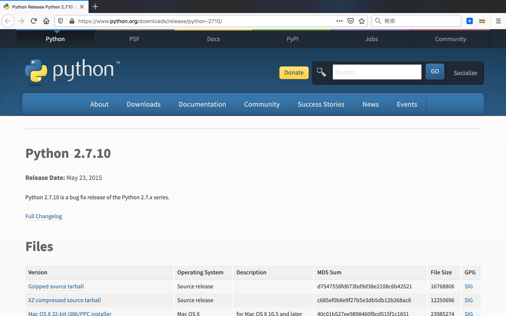

Introduction
nodistの設定
pythonの設定
rubyの設定
gitの設定
inputの設定
参考
test
HonKitで公開
pythonの設定
python set up
Python 2.7.10

steps
Ver2.7をインストール python-2.7.10.msi
Windows x86-64 MSI installer
インストーラに従って、インストールします C:\Python27
results matching "
"
No results matching "
"